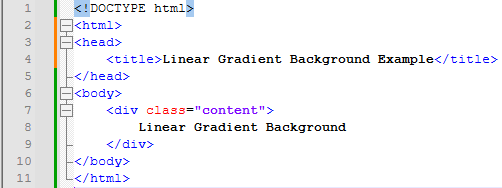

Description:
To create a linear gradient you must define at least two color stops. Color stops are the colors you want to render smooth transitions among. You can also set a starting point and a direction (or an angle) along with the gradient effect.
